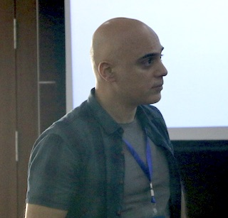

My research interests are partial differential equations, fluid dynamics, pattern formation and phase transitions.
- email: taylan.sengul [at] marmara [.] edu [.] tr
- address: Marmara Üniversitesi Göztepe Kampüsü Fen-Edebiyat Fakültesi GZF A015 34722 Kadıköy İstanbul
- office: GZFA 015
- tel: (0216) 777 3393
- CV
- Research Gate
- Google Scholar
Bilim Tarihi
Kısmi Türevli Denklemler
Analiz 3
Analiz 4
Calculus I
- Textbook: Thomas Calculus 13th Edition
- Course Plan and Exercises
- Lecture Notes and
LaTeX source files
- 2020 Fall: in class lecture notes
- Past Exams:
Exam 1:
2019 Fall,
2017 Fall,
2016 Spring,
2016 Fall,
2015 Fall,
Exam 2:
2019 Fall,
2017 Fall,
2016 Fall,
Final
2019 Fall,
2017 Fall,
2016 Fall,
2015 Fall,
Calculus II
- Textbook: Thomas Calculus 13th Edition
- Lecture notes. Week:
1,
2,
3,
4,
5,
6,
7,
8,
9,
10,
11,
12,
13,
14.
- Past Exams:
2017S1,
2017S2,
2017S3,
2018S1
2018S2
2018S3,
- Extra Resources:
Khan Academy,
Differential Equations
Linear Algebra
Dynamical Systems
Misc